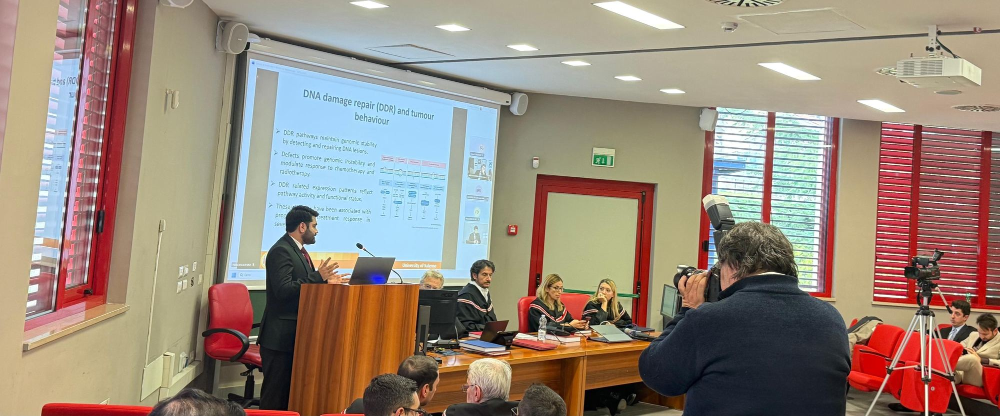
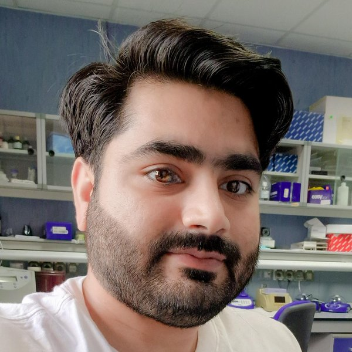

Bioinformatics and computational biology
Reproducible R and Python pipelines for large cancer datasets: survival modelling, network analysis, machine learning and data integration.
Translate this page
Machine translation by Google. Names and author lists stay in English.


Open to research positions
Computational and Translational Oncology Researcher
I am a translational oncology researcher with a PhD in Translational and Clinical Medicine from the University of Salerno, Italy (final grade 110/110). My work combines computational analysis of large cancer datasets with hands-on laboratory research. During my PhD I ran four projects in parallel, covering multi-omics biomarker discovery, cancer pharmacogenomics, drug-response studies in head and neck cancer cell lines, and mitochondrial gene expression in breast cancer.
On the computational side, I build prognostic gene signatures and survival models from TCGA and GEO data in R and Python, using differential expression, LASSO-Cox modelling, nomograms, immune infiltration analysis and pathway enrichment. In the lab, I work with cell culture, RT-qPCR, western blotting, flow cytometry, immunofluorescence and patient-derived PBMCs. I am looking for a postdoctoral or clinical research role where I can connect molecular findings with clinically useful outcomes.
Listed among the world's top 2% of scientists (Elsevier / Stanford University) in 2024 and 2025. Metrics from Google Scholar, 2026.
Became a registered member of the Human Cell Atlas.
Based in Glasgow and seeking postdoctoral and clinical research opportunities in oncology.
Defended my thesis on EMT and DDR prognostic signatures and was awarded the PhD in Translational and Clinical Medicine by the University of Salerno, with a final grade of 110/110.
Listed for the second year running among the world's top 2% scientists (Elsevier / Stanford University, Pharmacology & Pharmacy).
Earned the SITC–G Certificate in Cancer Immunotherapy, and joined the European Association for Cancer Research (early-career member) and the American Association for Cancer Research.
Joined the Biochemical Society as a postgraduate member.
Attended useR! 2025, the international conference of the R community.
Attended the Jean Monnet Summer School on the European Union and Global Health, and completed STEMCELL Technologies live training on human intestinal organoids.
Took part in the SITC Cancer Immunotherapy Winter School.
Attended the ISSCR 2024 Annual Meeting in Hamburg, Germany.
Named for the first time in the Elsevier / Stanford University list of the world's top 2% scientists.
Completed Immunology: Innate Immune System from Imperial College London.
Attended the Evolution of Cancer Pharmacology conference of the Italian Society of Pharmacology in Salerno.
Started research in molecular pharmacology in the lab of Prof. Valeria Conti at the Ospedali Riuniti San Giovanni di Dio e Ruggi d'Aragona, Salerno.
Joined the lab of Prof. Antonello Petrella (Department of Pharmacy, University of Salerno) for drug-response studies in head and neck cancer cell lines.
Began my PhD at the University of Salerno, awarded the sole fully funded scholarship in the call.
I want to understand how cancer cells change their identity and their DNA repair capacity, and how these changes decide who relapses and who responds to treatment.
I am currently working on two computational projects. The first is a cross-cancer study of epithelial-mesenchymal transition (EMT) and DNA damage response (DDR) gene programmes in six solid tumours, which links high-risk signatures to immune evasion, genomic instability and predicted drug response. The second is an integrative analysis of mitochondrial genome alterations and mitochondrial gene expression in breast cancer subtypes.
Next, I want to find out how EMT and DNA repair work together to drive resistance to chemotherapy, radiotherapy and targeted drugs such as PARP inhibitors, and how mitochondrial metabolism supports these resistant cell states. My approach combines bioinformatics and computational biology (multi-omics integration, survival modelling, immune deconvolution, network analysis and machine learning) with laboratory validation, so that computational signatures become testable biomarkers and treatment hypotheses.
Reproducible R and Python pipelines for large cancer datasets: survival modelling, network analysis, machine learning and data integration.
Integrating transcriptomic, mutational, copy-number and clinical data from TCGA and GEO to understand tumour behaviour across cancer types.
How epithelial-mesenchymal transition and DNA repair programmes shape high-risk disease, therapy resistance and treatment vulnerabilities.
Mitochondrial DNA alterations, mitochondrial gene expression and metabolic reprogramming across breast cancer subtypes.
Gene signatures, risk scores and nomograms for patient stratification, and genetic predictors of drug response and toxicity, such as DPYD.
Immune infiltration, immune evasion and immunotherapy response in high-risk tumour phenotypes.
Department of Medicine, Surgery and Dentistry (DIPMED), University of Salerno, Fisciano, Italy · Supervisor: Dr Federica Papaccio
Lab of Prof. Valeria Conti, Ospedali Riuniti San Giovanni di Dio e Ruggi d'Aragona, Salerno, Italy
Lab of Prof. Antonello Petrella, Department of Pharmacy (DIFARMA), University of Salerno, Fisciano, Italy
Medsol Clinical Labs, Islamabad, Pakistan
International Society of Engineering Science and Technology (ISEst), Nottingham, UK
A pan-cancer study of epithelial-mesenchymal transition and DNA damage response genes in BRCA, COAD, LUAD, LUSC, PAAD and STAD.
Manuscript in preparation
An integrative analysis of mitochondrial alterations and their prognostic significance in TCGA-BRCA, across luminal, triple-negative and HER2-positive subtypes.
Manuscript in preparation
Pre-treatment biomarkers of 5-FU and capecitabine toxicity in cancer patients.
Epigenetic and targeted drug combinations in HNSCC cell lines SCC-154 and CAL-27.
Pesticidal and antimicrobial activity of natural products formulated as nanosuspensions.
Published in Chemosphere (2022)
Analysis code for the computational projects is available on request.
31 publications, including 8 as first author. Complete and up-to-date lists are on Google Scholar and ORCID.
University of Salerno, Scuola Medica Salernitana, Italy · Final grade 110/110
PhD programme in Translational Medicine in Development and Active Ageing (XXXVIII cycle), curriculum in Translational and Clinical Medicine. Supervisor: Dr Federica Papaccio.
Thesis: Identification of Novel Epithelial-Mesenchymal Transition (EMT) and DNA Damage Repair (DDR)-Related Prognostic Gene Signatures as Predictive Biomarkers in Six Cancer Cohorts.
Coursework: statistics for clinical and basic research, computer science for research, multi-omics disciplines, translational research methods, methodology of research studies, analytical instruments and biomarkers in biomedical research, and intellectual property and patents.
Awarded the only fully funded PhD scholarship in the call (tuition, stipend, accommodation, meals and health insurance).
University of Agriculture Faisalabad, Pakistan
Research on plant-extract nano-biopesticides (see Projects).
University of Agriculture Faisalabad, Pakistan
University of the Punjab, Lahore, Pakistan
I welcome enquiries about postdoctoral and research positions, collaborations and peer review.
abuhuzaifavirk [at] gmail [dot] com
Glasgow, United Kingdom · References available on request.